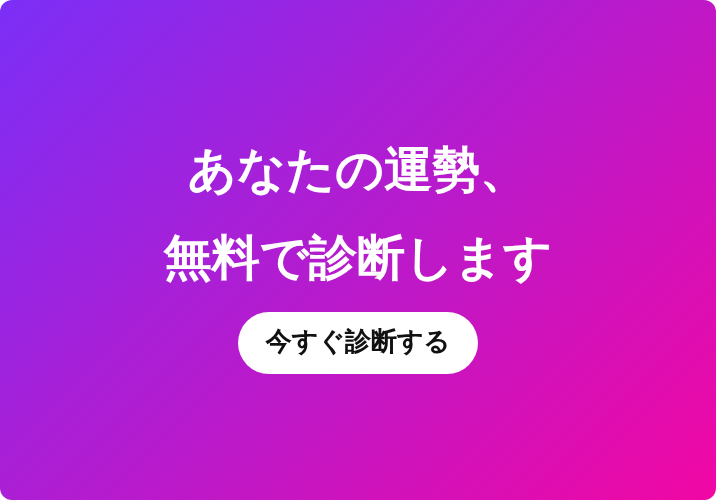
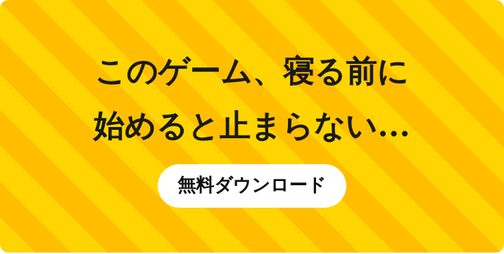
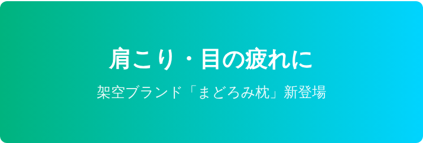
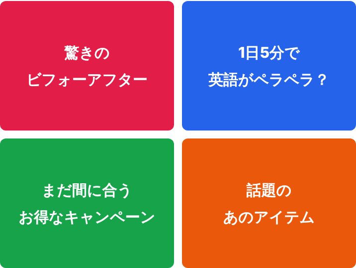
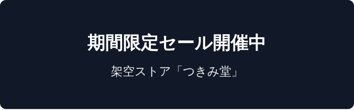

趣味・科学
秋の夜長に。ベランダで始める、はじめての星空観察

空気が澄む秋は、星を見るのにちょうどいい季節です（イメージ）
望遠鏡がなくても、星空観察は今夜から始められます。必要なのは、少し暗い場所と、目を慣らすための10分間だけ。ベランダでも、思っていたよりたくさんの星が見えます。
まずは部屋の明かりを消す
目が暗さに慣れるまでには、10分から15分ほどかかります。スマホの画面を見ると目がまた明るさに戻ってしまうので、観察中はなるべく見ないのがコツです。

どうしても使うときは、画面を一番暗くして、赤いセロハンをかぶせておくと目にやさしくなります。
明るい星から探してみる
秋の夜空で見つけやすいのは、四つの星が大きな四角形をつくる「秋の四辺形」です。南の空の高いところを見上げると、少し間隔の開いた四角が見つかります。


星座アプリは「答え合わせ」に
見つけた星が何なのか知りたくなったら、星座アプリで確かめてみましょう。先に自分の目で探してからアプリを見ると、星の並びがずっと覚えやすくなります。
寒くなってきたら、温かい飲み物とひざ掛けを用意して。ゆっくり空を眺める時間は、それだけで小さな休憩になります。
